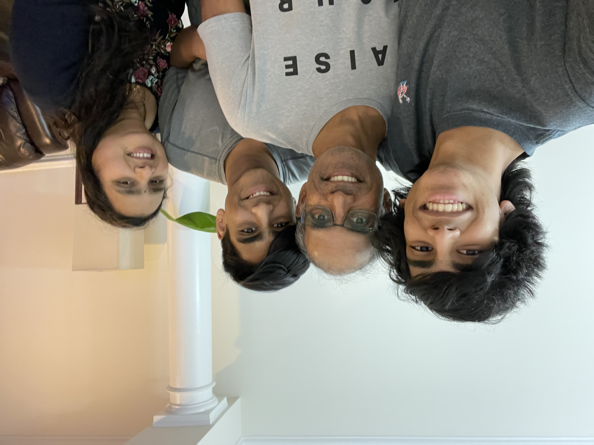
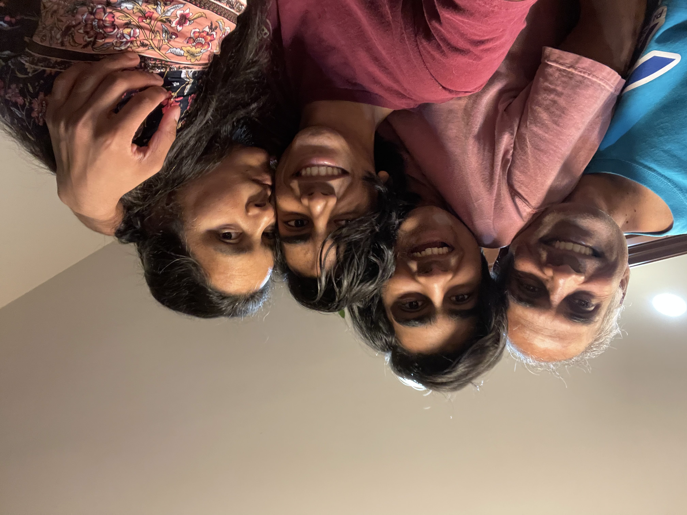
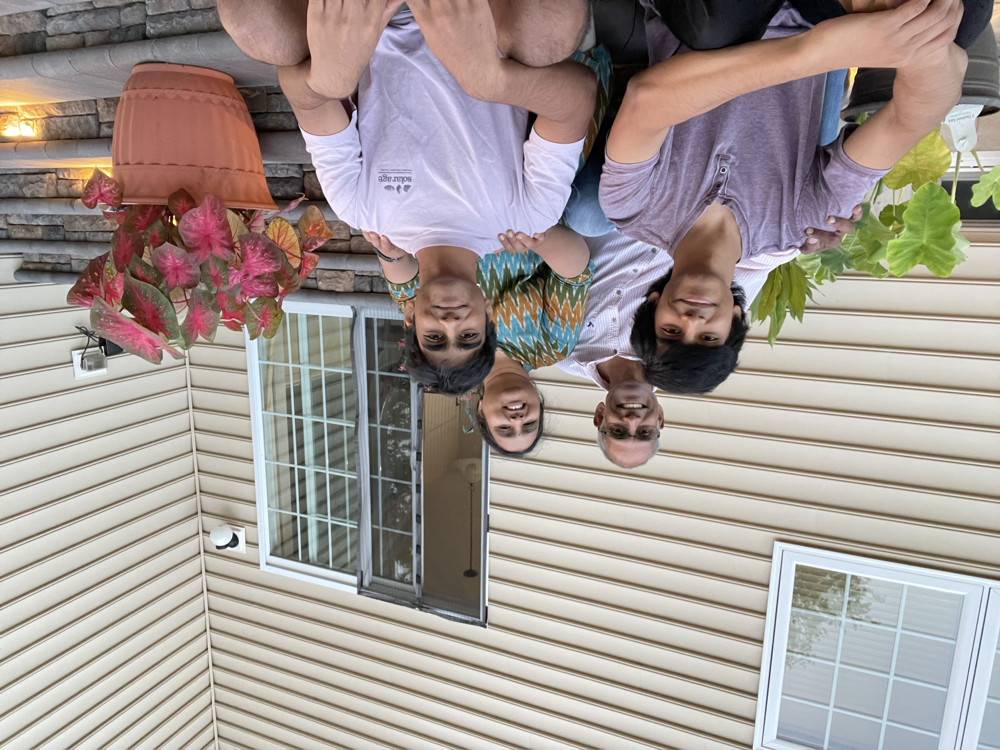

About Me
Welcome to my website! My name is Tarang Tondapu, and I'm a Junior at the University of Michigan!


My family is from the Greater Philadelphia area, where I was born and raised.
  At school, I like to watch football games in the Big House, spend time with my friends, and explore the Ann Arbor area.


Use the menu bar at the top to learn some more about my experience and interests.